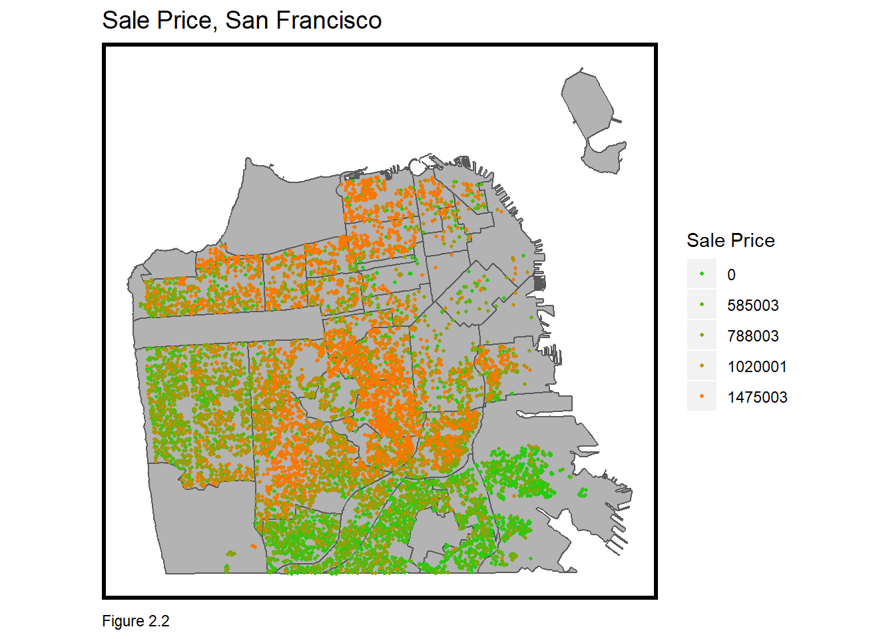
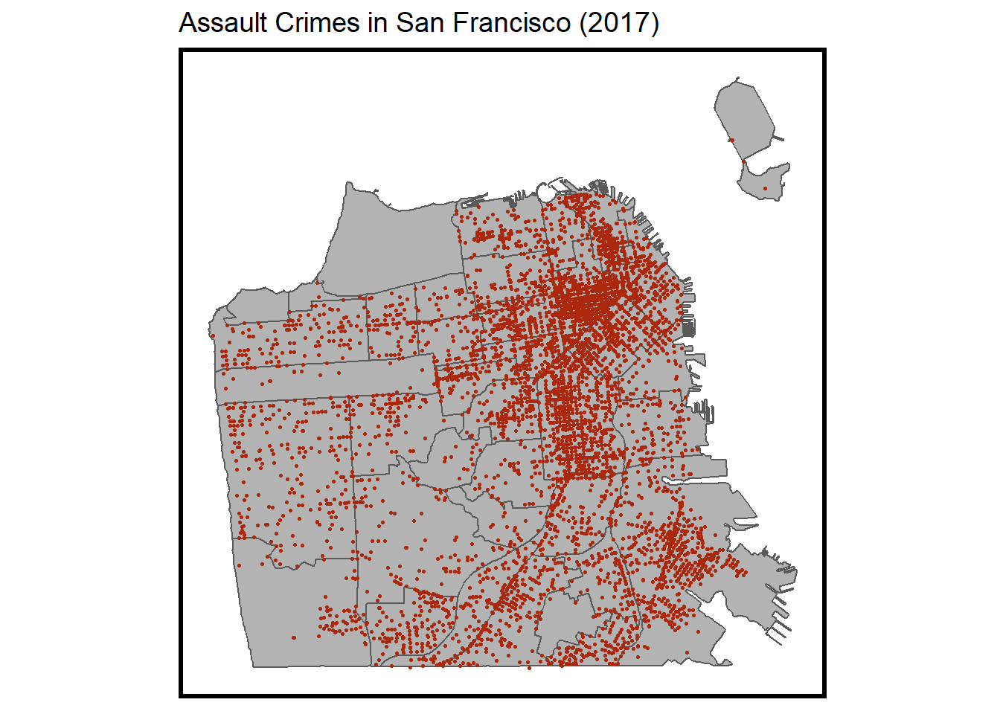

Data-Driven Decision-Making: Predicting Home Values in San Francisco
Sara Mattio and Kate Sutton
10/15/2019
Introduction
Predictive modeling can be a powerful tool in dtermining trends in property value. In October 2019, Zillow observed a need for an improved housing market prediction model put out a request for an improved model of home prices in San Francisco. The following model was developed to meet Zillow’s need and predict 2017 home prices in San Francisco as accurately as possible. To make a confident prediction, fice key predictors from a range of open data sources were utilized. The indicators range from environmental factors to demographic and economic data. This report provides insight on the data used, methods for developing the model, and the results and accuracy of the model.
Although accuracy of results was the primary goal, the project incurred challanges that diminished accuracy in results.
Data
Data was gathered from DataSF, San Francisco’s Open Data portal. Sources include the City of San Francisco’s Planning Department, Public Safety, and the Rent Arbitration Board. Survey data from the American Community Survey (ACS) was also utilized through the tidycensus package in R.
The table below provides summary statistics for the variables, sorted by category.
## FID_1 ParcelID
## Min. : 0 0024035: 1
## 1st Qu.: 2532 0026048: 1
## Median : 5066 0026051: 1
## Mean : 5066 0026061: 1
## 3rd Qu.: 7598 0027008: 1
## Max. :10132 0027039: 1
## (Other):10125
## Address PropClassC SaleDate
## NA-NA NA NA SAN FRANCISCO CA : 11 D :8674 130531 : 37
## 1681-1681 FULTON ST SAN FRANCISCO CA : 2 Z :1272 121109 : 35
## 188-188 BEULAH ST SAN FRANCISCO CA : 2 TIC : 58 121130 : 35
## 2075-2075 BANCROFT AVE SAN FRANCISCO CA: 2 F : 57 131108 : 35
## 212-212 CHATTANOOGA ST SAN FRANCISCO CA: 2 LZ : 24 131127 : 34
## 229-229 DOUGLASS ST SAN FRANCISCO CA : 2 DA : 16 130628 : 32
## (Other) :10110 (Other): 30 (Other):9923
## LandUse ZoningCode X Y
## RESIDENT:10131 RH1 :5128 Min. :5980569 Min. :2086052
## RH2 :2172 1st Qu.:5992445 1st Qu.:2094044
## RH1D :1089 Median :5999765 Median :2099365
## RH3 : 425 Mean :5998982 Mean :2100276
## RM1 : 222 3rd Qu.:6005322 3rd Qu.:2105275
## (Other): 225 Max. :6020464 Max. :2121818
## NA's : 870
## long lat SalePrice ConstType
## Min. :37.71 Min. :-122.5 Min. : 0 D :9102
## 1st Qu.:37.73 1st Qu.:-122.5 1st Qu.: 642901 WOO : 75
## Median :37.74 Median :-122.4 Median : 895001 C : 9
## Mean :37.75 Mean :-122.4 Mean :1065502 A : 5
## 3rd Qu.:37.76 3rd Qu.:-122.4 3rd Qu.:1330002 B : 5
## Max. :37.81 Max. :-122.4 Max. :4750003 (Other): 4
## NA's : 931
## LotArea PropArea BuiltYear Stories Units
## Min. : 0 Min. : 0 1900 : 809 Min. :1.000 Min. :1
## 1st Qu.: 187500 1st Qu.: 1150 1925 : 340 1st Qu.:1.000 1st Qu.:1
## Median : 250000 Median : 1486 1940 : 331 Median :1.000 Median :1
## Mean : 246116 Mean : 1636 1941 : 308 Mean :1.414 Mean :1
## 3rd Qu.: 300000 3rd Qu.: 1970 1924 : 306 3rd Qu.:2.000 3rd Qu.:1
## Max. :1890500 Max. :24308 1926 : 303 Max. :6.000 Max. :1
## (Other):7734
## Rooms Beds Baths SaleYr
## Min. : 1.000 Min. : 1.000 Min. : 1.000 Min. :12.00
## 1st Qu.: 5.000 1st Qu.: 3.000 1st Qu.: 1.000 1st Qu.:12.00
## Median : 6.000 Median : 3.000 Median : 2.000 Median :13.00
## Mean : 6.355 Mean : 3.019 Mean : 1.832 Mean :13.45
## 3rd Qu.: 7.000 3rd Qu.: 3.000 3rd Qu.: 2.000 3rd Qu.:14.00
## Max. :26.000 Max. :20.000 Max. :25.000 Max. :15.00
##
## holdOut Park Redline Transit_H
## Min. :0.00000 Min. :0.0000 Min. :0.0000 Min. :0.0000
## 1st Qu.:0.00000 1st Qu.:0.0000 1st Qu.:1.0000 1st Qu.:0.0000
## Median :0.00000 Median :0.0000 Median :1.0000 Median :0.0000
## Mean :0.06909 Mean :0.4482 Mean :0.8646 Mean :0.1943
## 3rd Qu.:0.00000 3rd Qu.:1.0000 3rd Qu.:1.0000 3rd Qu.:0.0000
## Max. :1.00000 Max. :1.0000 Max. :1.0000 Max. :1.0000
##
## Transit_Q FID_2 OBJECTID MAPBLKLOT
## Min. :0.0000 Min. : 97 Min. : 98 1185058: 2
## 1st Qu.:0.0000 1st Qu.: 50315 1st Qu.: 50316 1258040: 2
## Median :0.0000 Median : 85630 Median : 85631 3621115: 2
## Mean :0.0383 Mean : 84097 Mean : 84098 0024035: 1
## 3rd Qu.:0.0000 3rd Qu.:121253 3rd Qu.:121254 0026048: 1
## Max. :1.0000 Max. :155438 Max. :155439 0026051: 1
## (Other):10122
## BLKLOT BLOCK_NUM LOT_NUM FROM_ST TO_ST
## 1185058: 2 4991 : 26 007 : 232 50 : 39 50 : 38
## 1258040: 2 7381 : 19 009 : 226 15 : 37 15 : 37
## 3621115: 2 1269 : 17 012 : 221 40 : 37 40 : 36
## 0024035: 1 4711 : 16 002 : 217 2 : 32 2 : 32
## 0026048: 1 3601 : 15 008 : 217 20 : 32 20 : 32
## 0026051: 1 3011 : 14 006 : 216 (Other):9937 (Other):9939
## (Other):10122 (Other):10024 (Other):8802 NA's : 17 NA's : 17
## STREET ST_TYPE RESUNITS LANDUSE_1
## 25TH : 87 ST :4764 Min. : 0.000 MISSING DATA: 12
## 17TH : 86 AVE :3995 1st Qu.: 1.000 MIXRES : 3
## 28TH : 83 DR : 445 Median : 1.000 RESIDENT :10115
## 27TH : 82 WAY : 339 Mean : 1.604 VACANT : 1
## 20TH : 77 BLVD : 217 3rd Qu.: 1.000
## (Other):9699 (Other): 333 Max. :332.000
## NA's : 17 NA's : 38
## BLDGSQFT YRBUILT TOTAL_USES CIE
## Min. : 0 Min. : 0 Min. : 0.0 Min. : 0.00
## 1st Qu.:1150 1st Qu.:1913 1st Qu.: 0.0 1st Qu.: 0.00
## Median :1478 Median :1929 Median : 0.0 Median : 0.00
## Mean :1624 Mean :1913 Mean : 135.3 Mean : 11.04
## 3rd Qu.:1959 3rd Qu.:1948 3rd Qu.: 0.0 3rd Qu.: 0.00
## Max. :7679 Max. :2016 Max. :191801.0 Max. :11357.00
##
## MED MIPS RETAIL PDR
## Min. : 0.000 Min. : 0.00 Min. : 0.00 Min. : 0.00
## 1st Qu.: 0.000 1st Qu.: 0.00 1st Qu.: 0.00 1st Qu.: 0.00
## Median : 0.000 Median : 0.00 Median : 0.00 Median : 0.00
## Mean : 7.637 Mean : 84.74 Mean : 15.18 Mean : 15.96
## 3rd Qu.: 0.000 3rd Qu.: 0.00 3rd Qu.: 0.00 3rd Qu.: 0.00
## Max. :16767.000 Max. :170154.00 Max. :41308.00 Max. :23993.00
##
## VISITOR SHAPE_Leng SHAPE_Area
## Min. : 0.000 Min. : 79.34 Min. : 343.3
## 1st Qu.: 0.000 1st Qu.: 226.81 1st Qu.: 2273.1
## Median : 0.000 Median : 251.11 Median : 2592.0
## Mean : 0.714 Mean : 257.36 Mean : 2979.7
## 3rd Qu.: 0.000 3rd Qu.: 289.33 3rd Qu.: 3017.4
## Max. :4462.000 Max. :2929.94 Max. :213052.6
##
## nhood GEOID NAME
## Sunset/Parkside :1399 Length:10131 Length:10131
## West of Twin Peaks :1175 Class :character Class :character
## Excelsior : 664 Mode :character Mode :character
## Bayview Hunters Point: 614
## Bernal Heights : 612
## (Other) :5661
## NA's : 6
## variable estimate moe geometry
## Length:10131 Min. : 333300 Min. : 11870 POINT :10131
## Class :character 1st Qu.: 647100 1st Qu.: 61688 epsg:4326 : 0
## Mode :character Median : 848200 Median : 91033 +proj=long...: 0
## Mean : 880268 Mean : 146981
## 3rd Qu.:1002800 3rd Qu.: 163684
## Max. :2000001 Max. :1343427
## NA's :124 NA's :414
## crime_nn1 crime_nn2 crime_nn3 crime_nn4
## Min. :9.555e-06 Min. :0.0001415 Min. :0.000209 Min. :0.0002361
## 1st Qu.:5.286e-04 1st Qu.:0.0007509 1st Qu.:0.000924 1st Qu.:0.0010620
## Median :8.586e-04 Median :0.0011317 Median :0.001349 Median :0.0015377
## Mean :1.063e-03 Mean :0.0013037 Mean :0.001515 Mean :0.0016969
## 3rd Qu.:1.403e-03 3rd Qu.:0.0016519 3rd Qu.:0.001905 3rd Qu.:0.0021210
## Max. :6.264e-03 Max. :0.0069296 Max. :0.007189 Max. :0.0073209
##
## crime_nn5
## Min. :0.0003453
## 1st Qu.:0.0011858
## Median :0.0016980
## Mean :0.0018589
## 3rd Qu.:0.0023238
## Max. :0.0074050
## The correlation matrix below indicates the corrleation of all independent variables with the dependent variable. Note a lack of multicollinearity in the model–a lack of independent variables that are highly related to each other.
## [,1] [,2] [,3] [,4] [,5] [,6]
## [1,] 1.000 0.364 NA 0.894 -0.172 NA
## [2,] 0.364 1.000 NA 0.380 0.013 NA
## [3,] NA NA 1 NA NA NA
## [4,] 0.894 0.380 NA 1.000 -0.193 NA
## [5,] -0.172 0.013 NA -0.193 1.000 NA
## [6,] NA NA NA NA NA 1In Figure 2.1, four indicators of interest are shown in a correlation scatterplot. Variables that appeared to have correlation with sale price were tested to be included in the model.
## Warning: attributes are not identical across measure variables;
## they will be dropped
The map in Figure 2.2 shows housing prices mapped out in San Francisco. Higher home values, indicated by orange poionts, tend to be clustered together in the center and northern region of the city. Homes with lower values, indicated by green points, tend to be clustered in the south and southwestern part of San Francisco. 
The maps below show several variables mapped out in San Francisco.

Methods
After acquiring the data above, datasets were cleaned up to remove any outliers and ensure accuracy of data. For example, if an address was listed with 829 stories, the property was then visually verified. If the number of stories was determined to be visibly inaccurate, the data was corrected.
In order to develop the prediction model, the selected indicators (independent variables) were put into a linear regression model with the sale price as the dependent variable. Simply put, the linear regression model tested whether the combination of indicators accurately predicted sale price. A range of indicators were then tested to determine if they had any effect on sale price. Variables with a significant effect on sale price were included in the final model. The Sale Price is estimated as a function of the group of independent variables. The results of the model are provided below, providing a range of tests to determine goodness of fit for the model.